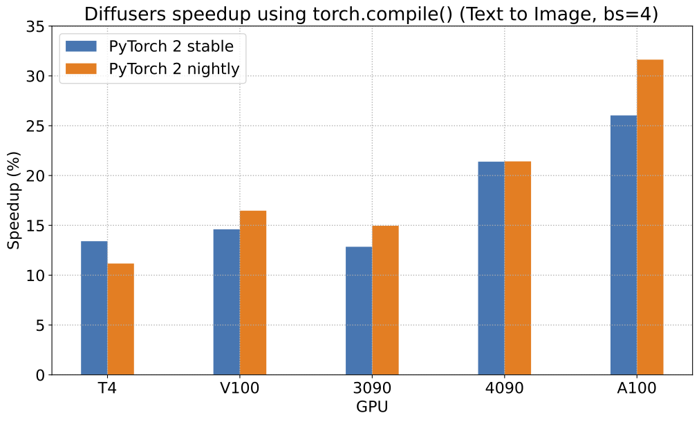
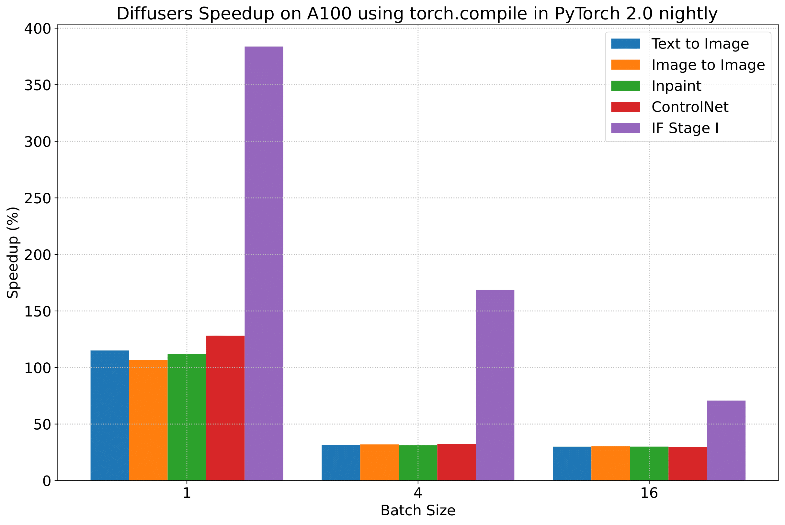

Diffusers documentation
Diffusers에서의 PyTorch 2.0 가속화 지원
Diffusers에서의 PyTorch 2.0 가속화 지원
0.13.0 버전부터 Diffusers는 PyTorch 2.0에서의 최신 최적화를 지원합니다. 이는 다음을 포함됩니다.
- momory-efficient attention을 사용한 가속화된 트랜스포머 지원 -
xformers같은 추가적인 dependencies 필요 없음 - 추가 성능 향상을 위한 개별 모델에 대한 컴파일 기능 torch.compile 지원
설치
가속화된 어텐션 구현과 및 torch.compile()을 사용하기 위해, pip에서 최신 버전의 PyTorch 2.0을 설치되어 있고 diffusers 0.13.0. 버전 이상인지 확인하세요. 아래 설명된 바와 같이, PyTorch 2.0이 활성화되어 있을 때 diffusers는 최적화된 어텐션 프로세서(AttnProcessor2_0)를 사용합니다.
pip install --upgrade torch diffusers
가속화된 트랜스포머와 torch.compile 사용하기.
가속화된 트랜스포머 구현
PyTorch 2.0에는
torch.nn.functional.scaled_dot_product_attention함수를 통해 최적화된 memory-efficient attention의 구현이 포함되어 있습니다. 이는 입력 및 GPU 유형에 따라 여러 최적화를 자동으로 활성화합니다. 이는 xFormers의memory_efficient_attention과 유사하지만 기본적으로 PyTorch에 내장되어 있습니다.이러한 최적화는 PyTorch 2.0이 설치되어 있고
torch.nn.functional.scaled_dot_product_attention을 사용할 수 있는 경우 Diffusers에서 기본적으로 활성화됩니다. 이를 사용하려면torch 2.0을 설치하고 파이프라인을 사용하기만 하면 됩니다. 예를 들어:import torch from diffusers import DiffusionPipeline pipe = DiffusionPipeline.from_pretrained("stable-diffusion-v1-5/stable-diffusion-v1-5", torch_dtype=torch.float16) pipe = pipe.to("cuda") prompt = "a photo of an astronaut riding a horse on mars" image = pipe(prompt).images[0]이를 명시적으로 활성화하려면(필수는 아님) 아래와 같이 수행할 수 있습니다.
import torch from diffusers import DiffusionPipeline + from diffusers.models.attention_processor import AttnProcessor2_0 pipe = DiffusionPipeline.from_pretrained("stable-diffusion-v1-5/stable-diffusion-v1-5", torch_dtype=torch.float16).to("cuda") + pipe.unet.set_attn_processor(AttnProcessor2_0()) prompt = "a photo of an astronaut riding a horse on mars" image = pipe(prompt).images[0]이 실행 과정은
xFormers만큼 빠르고 메모리적으로 효율적이어야 합니다. 자세한 내용은 벤치마크에서 확인하세요.파이프라인을 보다 deterministic으로 만들거나 파인 튜닝된 모델을 Core ML과 같은 다른 형식으로 변환해야 하는 경우 바닐라 어텐션 프로세서 (
AttnProcessor)로 되돌릴 수 있습니다. 일반 어텐션 프로세서를 사용하려면set_default_attn_processor()함수를 사용할 수 있습니다:import torch from diffusers import DiffusionPipeline from diffusers.models.attention_processor import AttnProcessor pipe = DiffusionPipeline.from_pretrained("stable-diffusion-v1-5/stable-diffusion-v1-5", torch_dtype=torch.float16).to("cuda") pipe.unet.set_default_attn_processor() prompt = "a photo of an astronaut riding a horse on mars" image = pipe(prompt).images[0]torch.compile
추가적인 속도 향상을 위해 새로운
torch.compile기능을 사용할 수 있습니다. 파이프라인의 UNet은 일반적으로 계산 비용이 가장 크기 때문에 나머지 하위 모델(텍스트 인코더와 VAE)은 그대로 두고unet을torch.compile로 래핑합니다. 자세한 내용과 다른 옵션은 torch 컴파일 문서를 참조하세요.pipe.unet = torch.compile(pipe.unet, mode="reduce-overhead", fullgraph=True) images = pipe(prompt, num_inference_steps=steps, num_images_per_prompt=batch_size).imagesGPU 유형에 따라
compile()은 가속화된 트랜스포머 최적화를 통해 5% - 300%의 추가 성능 향상을 얻을 수 있습니다. 그러나 컴파일은 Ampere(A100, 3090), Ada(4090) 및 Hopper(H100)와 같은 최신 GPU 아키텍처에서 더 많은 성능 향상을 가져올 수 있음을 참고하세요.컴파일은 완료하는 데 약간의 시간이 걸리므로, 파이프라인을 한 번 준비한 다음 동일한 유형의 추론 작업을 여러 번 수행해야 하는 상황에 가장 적합합니다. 다른 이미지 크기에서 컴파일된 파이프라인을 호출하면 시간적 비용이 많이 들 수 있는 컴파일 작업이 다시 트리거됩니다.
벤치마크
PyTorch 2.0의 효율적인 어텐션 구현과 torch.compile을 사용하여 가장 많이 사용되는 5개의 파이프라인에 대해 다양한 GPU와 배치 크기에 걸쳐 포괄적인 벤치마크를 수행했습니다. 여기서는 torch.compile()이 최적으로 활용되도록 하는 diffusers 0.17.0.dev0을 사용했습니다.
벤치마킹 코드
Stable Diffusion text-to-image
from diffusers import DiffusionPipeline
import torch
path = "stable-diffusion-v1-5/stable-diffusion-v1-5"
run_compile = True # Set True / False
pipe = DiffusionPipeline.from_pretrained(path, torch_dtype=torch.float16)
pipe = pipe.to("cuda")
pipe.unet.to(memory_format=torch.channels_last)
if run_compile:
print("Run torch compile")
pipe.unet = torch.compile(pipe.unet, mode="reduce-overhead", fullgraph=True)
prompt = "ghibli style, a fantasy landscape with castles"
for _ in range(3):
images = pipe(prompt=prompt).imagesStable Diffusion image-to-image
from diffusers import StableDiffusionImg2ImgPipeline
import requests
import torch
from PIL import Image
from io import BytesIO
url = "https://raw.githubusercontent.com/CompVis/stable-diffusion/main/assets/stable-samples/img2img/sketch-mountains-input.jpg"
response = requests.get(url)
init_image = Image.open(BytesIO(response.content)).convert("RGB")
init_image = init_image.resize((512, 512))
path = "stable-diffusion-v1-5/stable-diffusion-v1-5"
run_compile = True # Set True / False
pipe = StableDiffusionImg2ImgPipeline.from_pretrained(path, torch_dtype=torch.float16)
pipe = pipe.to("cuda")
pipe.unet.to(memory_format=torch.channels_last)
if run_compile:
print("Run torch compile")
pipe.unet = torch.compile(pipe.unet, mode="reduce-overhead", fullgraph=True)
prompt = "ghibli style, a fantasy landscape with castles"
for _ in range(3):
image = pipe(prompt=prompt, image=init_image).images[0]Stable Diffusion - inpainting
from diffusers import StableDiffusionInpaintPipeline
import requests
import torch
from PIL import Image
from io import BytesIO
url = "https://raw.githubusercontent.com/CompVis/stable-diffusion/main/assets/stable-samples/img2img/sketch-mountains-input.jpg"
def download_image(url):
response = requests.get(url)
return Image.open(BytesIO(response.content)).convert("RGB")
img_url = "https://raw.githubusercontent.com/CompVis/latent-diffusion/main/data/inpainting_examples/overture-creations-5sI6fQgYIuo.png"
mask_url = "https://raw.githubusercontent.com/CompVis/latent-diffusion/main/data/inpainting_examples/overture-creations-5sI6fQgYIuo_mask.png"
init_image = download_image(img_url).resize((512, 512))
mask_image = download_image(mask_url).resize((512, 512))
path = "runwayml/stable-diffusion-inpainting"
run_compile = True # Set True / False
pipe = StableDiffusionInpaintPipeline.from_pretrained(path, torch_dtype=torch.float16)
pipe = pipe.to("cuda")
pipe.unet.to(memory_format=torch.channels_last)
if run_compile:
print("Run torch compile")
pipe.unet = torch.compile(pipe.unet, mode="reduce-overhead", fullgraph=True)
prompt = "ghibli style, a fantasy landscape with castles"
for _ in range(3):
image = pipe(prompt=prompt, image=init_image, mask_image=mask_image).images[0]ControlNet
from diffusers import StableDiffusionControlNetPipeline, ControlNetModel
import requests
import torch
from PIL import Image
from io import BytesIO
url = "https://raw.githubusercontent.com/CompVis/stable-diffusion/main/assets/stable-samples/img2img/sketch-mountains-input.jpg"
response = requests.get(url)
init_image = Image.open(BytesIO(response.content)).convert("RGB")
init_image = init_image.resize((512, 512))
path = "stable-diffusion-v1-5/stable-diffusion-v1-5"
run_compile = True # Set True / False
controlnet = ControlNetModel.from_pretrained("lllyasviel/sd-controlnet-canny", torch_dtype=torch.float16)
pipe = StableDiffusionControlNetPipeline.from_pretrained(
path, controlnet=controlnet, torch_dtype=torch.float16
)
pipe = pipe.to("cuda")
pipe.unet.to(memory_format=torch.channels_last)
pipe.controlnet.to(memory_format=torch.channels_last)
if run_compile:
print("Run torch compile")
pipe.unet = torch.compile(pipe.unet, mode="reduce-overhead", fullgraph=True)
pipe.controlnet = torch.compile(pipe.controlnet, mode="reduce-overhead", fullgraph=True)
prompt = "ghibli style, a fantasy landscape with castles"
for _ in range(3):
image = pipe(prompt=prompt, image=init_image).images[0]IF text-to-image + upscaling
from diffusers import DiffusionPipeline
import torch
run_compile = True # Set True / False
pipe = DiffusionPipeline.from_pretrained("DeepFloyd/IF-I-M-v1.0", variant="fp16", text_encoder=None, torch_dtype=torch.float16)
pipe.to("cuda")
pipe_2 = DiffusionPipeline.from_pretrained("DeepFloyd/IF-II-M-v1.0", variant="fp16", text_encoder=None, torch_dtype=torch.float16)
pipe_2.to("cuda")
pipe_3 = DiffusionPipeline.from_pretrained("stabilityai/stable-diffusion-x4-upscaler", torch_dtype=torch.float16)
pipe_3.to("cuda")
pipe.unet.to(memory_format=torch.channels_last)
pipe_2.unet.to(memory_format=torch.channels_last)
pipe_3.unet.to(memory_format=torch.channels_last)
if run_compile:
pipe.unet = torch.compile(pipe.unet, mode="reduce-overhead", fullgraph=True)
pipe_2.unet = torch.compile(pipe_2.unet, mode="reduce-overhead", fullgraph=True)
pipe_3.unet = torch.compile(pipe_3.unet, mode="reduce-overhead", fullgraph=True)
prompt = "the blue hulk"
prompt_embeds = torch.randn((1, 2, 4096), dtype=torch.float16)
neg_prompt_embeds = torch.randn((1, 2, 4096), dtype=torch.float16)
for _ in range(3):
image = pipe(prompt_embeds=prompt_embeds, negative_prompt_embeds=neg_prompt_embeds, output_type="pt").images
image_2 = pipe_2(image=image, prompt_embeds=prompt_embeds, negative_prompt_embeds=neg_prompt_embeds, output_type="pt").images
image_3 = pipe_3(prompt=prompt, image=image, noise_level=100).imagesPyTorch 2.0 및 torch.compile()로 얻을 수 있는 가능한 속도 향상에 대해, Stable Diffusion text-to-image pipeline에 대한 상대적인 속도 향상을 보여주는 차트를 5개의 서로 다른 GPU 제품군(배치 크기 4)에 대해 나타냅니다:

To give you an even better idea of how this speed-up holds for the other pipelines presented above, consider the following
plot that shows the benchmarking numbers from an A100 across three different batch sizes
(with PyTorch 2.0 nightly and torch.compile()):
이 속도 향상이 위에 제시된 다른 파이프라인에 대해서도 어떻게 유지되는지 더 잘 이해하기 위해, 세 가지의 다른 배치 크기에 걸쳐 A100의 벤치마킹(PyTorch 2.0 nightly 및 `torch.compile() 사용) 수치를 보여주는 차트를 보입니다:

(위 차트의 벤치마크 메트릭은 초당 iteration 수(iterations/second)입니다)
그러나 투명성을 위해 모든 벤치마킹 수치를 공개합니다!
다음 표들에서는, 초당 처리되는 iteration 수 측면에서의 결과를 보여줍니다.
A100 (batch size: 1)
| Pipeline | torch 2.0 - no compile | torch nightly - no compile | torch 2.0 - compile | torch nightly - compile |
|---|---|---|---|---|
| SD - txt2img | 21.66 | 23.13 | 44.03 | 49.74 |
| SD - img2img | 21.81 | 22.40 | 43.92 | 46.32 |
| SD - inpaint | 22.24 | 23.23 | 43.76 | 49.25 |
| SD - controlnet | 15.02 | 15.82 | 32.13 | 36.08 |
| IF | 20.21 / 13.84 / 24.00 | 20.12 / 13.70 / 24.03 | ❌ | 97.34 / 27.23 / 111.66 |
A100 (batch size: 4)
| Pipeline | torch 2.0 - no compile | torch nightly - no compile | torch 2.0 - compile | torch nightly - compile |
|---|---|---|---|---|
| SD - txt2img | 11.6 | 13.12 | 14.62 | 17.27 |
| SD - img2img | 11.47 | 13.06 | 14.66 | 17.25 |
| SD - inpaint | 11.67 | 13.31 | 14.88 | 17.48 |
| SD - controlnet | 8.28 | 9.38 | 10.51 | 12.41 |
| IF | 25.02 | 18.04 | ❌ | 48.47 |
A100 (batch size: 16)
| Pipeline | torch 2.0 - no compile | torch nightly - no compile | torch 2.0 - compile | torch nightly - compile |
|---|---|---|---|---|
| SD - txt2img | 3.04 | 3.6 | 3.83 | 4.68 |
| SD - img2img | 2.98 | 3.58 | 3.83 | 4.67 |
| SD - inpaint | 3.04 | 3.66 | 3.9 | 4.76 |
| SD - controlnet | 2.15 | 2.58 | 2.74 | 3.35 |
| IF | 8.78 | 9.82 | ❌ | 16.77 |
V100 (batch size: 1)
| Pipeline | torch 2.0 - no compile | torch nightly - no compile | torch 2.0 - compile | torch nightly - compile |
|---|---|---|---|---|
| SD - txt2img | 18.99 | 19.14 | 20.95 | 22.17 |
| SD - img2img | 18.56 | 19.18 | 20.95 | 22.11 |
| SD - inpaint | 19.14 | 19.06 | 21.08 | 22.20 |
| SD - controlnet | 13.48 | 13.93 | 15.18 | 15.88 |
| IF | 20.01 / 9.08 / 23.34 | 19.79 / 8.98 / 24.10 | ❌ | 55.75 / 11.57 / 57.67 |
V100 (batch size: 4)
| Pipeline | torch 2.0 - no compile | torch nightly - no compile | torch 2.0 - compile | torch nightly - compile |
|---|---|---|---|---|
| SD - txt2img | 5.96 | 5.89 | 6.83 | 6.86 |
| SD - img2img | 5.90 | 5.91 | 6.81 | 6.82 |
| SD - inpaint | 5.99 | 6.03 | 6.93 | 6.95 |
| SD - controlnet | 4.26 | 4.29 | 4.92 | 4.93 |
| IF | 15.41 | 14.76 | ❌ | 22.95 |
V100 (batch size: 16)
| Pipeline | torch 2.0 - no compile | torch nightly - no compile | torch 2.0 - compile | torch nightly - compile |
|---|---|---|---|---|
| SD - txt2img | 1.66 | 1.66 | 1.92 | 1.90 |
| SD - img2img | 1.65 | 1.65 | 1.91 | 1.89 |
| SD - inpaint | 1.69 | 1.69 | 1.95 | 1.93 |
| SD - controlnet | 1.19 | 1.19 | OOM after warmup | 1.36 |
| IF | 5.43 | 5.29 | ❌ | 7.06 |
T4 (batch size: 1)
| Pipeline | torch 2.0 - no compile | torch nightly - no compile | torch 2.0 - compile | torch nightly - compile |
|---|---|---|---|---|
| SD - txt2img | 6.9 | 6.95 | 7.3 | 7.56 |
| SD - img2img | 6.84 | 6.99 | 7.04 | 7.55 |
| SD - inpaint | 6.91 | 6.7 | 7.01 | 7.37 |
| SD - controlnet | 4.89 | 4.86 | 5.35 | 5.48 |
| IF | 17.42 / 2.47 / 18.52 | 16.96 / 2.45 / 18.69 | ❌ | 24.63 / 2.47 / 23.39 |
T4 (batch size: 4)
| Pipeline | torch 2.0 - no compile | torch nightly - no compile | torch 2.0 - compile | torch nightly - compile |
|---|---|---|---|---|
| SD - txt2img | 1.79 | 1.79 | 2.03 | 1.99 |
| SD - img2img | 1.77 | 1.77 | 2.05 | 2.04 |
| SD - inpaint | 1.81 | 1.82 | 2.09 | 2.09 |
| SD - controlnet | 1.34 | 1.27 | 1.47 | 1.46 |
| IF | 5.79 | 5.61 | ❌ | 7.39 |
T4 (batch size: 16)
| Pipeline | torch 2.0 - no compile | torch nightly - no compile | torch 2.0 - compile | torch nightly - compile |
|---|---|---|---|---|
| SD - txt2img | 2.34s | 2.30s | OOM after 2nd iteration | 1.99s |
| SD - img2img | 2.35s | 2.31s | OOM after warmup | 2.00s |
| SD - inpaint | 2.30s | 2.26s | OOM after 2nd iteration | 1.95s |
| SD - controlnet | OOM after 2nd iteration | OOM after 2nd iteration | OOM after warmup | OOM after warmup |
| IF * | 1.44 | 1.44 | ❌ | 1.94 |
RTX 3090 (batch size: 1)
| Pipeline | torch 2.0 - no compile | torch nightly - no compile | torch 2.0 - compile | torch nightly - compile |
|---|---|---|---|---|
| SD - txt2img | 22.56 | 22.84 | 23.84 | 25.69 |
| SD - img2img | 22.25 | 22.61 | 24.1 | 25.83 |
| SD - inpaint | 22.22 | 22.54 | 24.26 | 26.02 |
| SD - controlnet | 16.03 | 16.33 | 17.38 | 18.56 |
| IF | 27.08 / 9.07 / 31.23 | 26.75 / 8.92 / 31.47 | ❌ | 68.08 / 11.16 / 65.29 |
RTX 3090 (batch size: 4)
| Pipeline | torch 2.0 - no compile | torch nightly - no compile | torch 2.0 - compile | torch nightly - compile |
|---|---|---|---|---|
| SD - txt2img | 6.46 | 6.35 | 7.29 | 7.3 |
| SD - img2img | 6.33 | 6.27 | 7.31 | 7.26 |
| SD - inpaint | 6.47 | 6.4 | 7.44 | 7.39 |
| SD - controlnet | 4.59 | 4.54 | 5.27 | 5.26 |
| IF | 16.81 | 16.62 | ❌ | 21.57 |
RTX 3090 (batch size: 16)
| Pipeline | torch 2.0 - no compile | torch nightly - no compile | torch 2.0 - compile | torch nightly - compile |
|---|---|---|---|---|
| SD - txt2img | 1.7 | 1.69 | 1.93 | 1.91 |
| SD - img2img | 1.68 | 1.67 | 1.93 | 1.9 |
| SD - inpaint | 1.72 | 1.71 | 1.97 | 1.94 |
| SD - controlnet | 1.23 | 1.22 | 1.4 | 1.38 |
| IF | 5.01 | 5.00 | ❌ | 6.33 |
RTX 4090 (batch size: 1)
| Pipeline | torch 2.0 - no compile | torch nightly - no compile | torch 2.0 - compile | torch nightly - compile |
|---|---|---|---|---|
| SD - txt2img | 40.5 | 41.89 | 44.65 | 49.81 |
| SD - img2img | 40.39 | 41.95 | 44.46 | 49.8 |
| SD - inpaint | 40.51 | 41.88 | 44.58 | 49.72 |
| SD - controlnet | 29.27 | 30.29 | 32.26 | 36.03 |
| IF | 69.71 / 18.78 / 85.49 | 69.13 / 18.80 / 85.56 | ❌ | 124.60 / 26.37 / 138.79 |
RTX 4090 (batch size: 4)
| Pipeline | torch 2.0 - no compile | torch nightly - no compile | torch 2.0 - compile | torch nightly - compile |
|---|---|---|---|---|
| SD - txt2img | 12.62 | 12.84 | 15.32 | 15.59 |
| SD - img2img | 12.61 | 12,.79 | 15.35 | 15.66 |
| SD - inpaint | 12.65 | 12.81 | 15.3 | 15.58 |
| SD - controlnet | 9.1 | 9.25 | 11.03 | 11.22 |
| IF | 31.88 | 31.14 | ❌ | 43.92 |
RTX 4090 (batch size: 16)
| Pipeline | torch 2.0 - no compile | torch nightly - no compile | torch 2.0 - compile | torch nightly - compile |
|---|---|---|---|---|
| SD - txt2img | 3.17 | 3.2 | 3.84 | 3.85 |
| SD - img2img | 3.16 | 3.2 | 3.84 | 3.85 |
| SD - inpaint | 3.17 | 3.2 | 3.85 | 3.85 |
| SD - controlnet | 2.23 | 2.3 | 2.7 | 2.75 |
| IF | 9.26 | 9.2 | ❌ | 13.31 |
참고
- Follow this PR for more details on the environment used for conducting the benchmarks.
- For the IF pipeline and batch sizes > 1, we only used a batch size of >1 in the first IF pipeline for text-to-image generation and NOT for upscaling. So, that means the two upscaling pipelines received a batch size of 1.
Thanks to Horace He from the PyTorch team for their support in improving our support of torch.compile() in Diffusers.
- 벤치마크 수행에 사용된 환경에 대한 자세한 내용은 이 PR을 참조하세요.
- IF 파이프라인와 배치 크기 > 1의 경우 첫 번째 IF 파이프라인에서 text-to-image 생성을 위한 배치 크기 > 1만 사용했으며 업스케일링에는 사용하지 않았습니다. 즉, 두 개의 업스케일링 파이프라인이 배치 크기 1임을 의미합니다.
Diffusers에서 torch.compile() 지원을 개선하는 데 도움을 준 PyTorch 팀의 Horace He에게 감사드립니다.